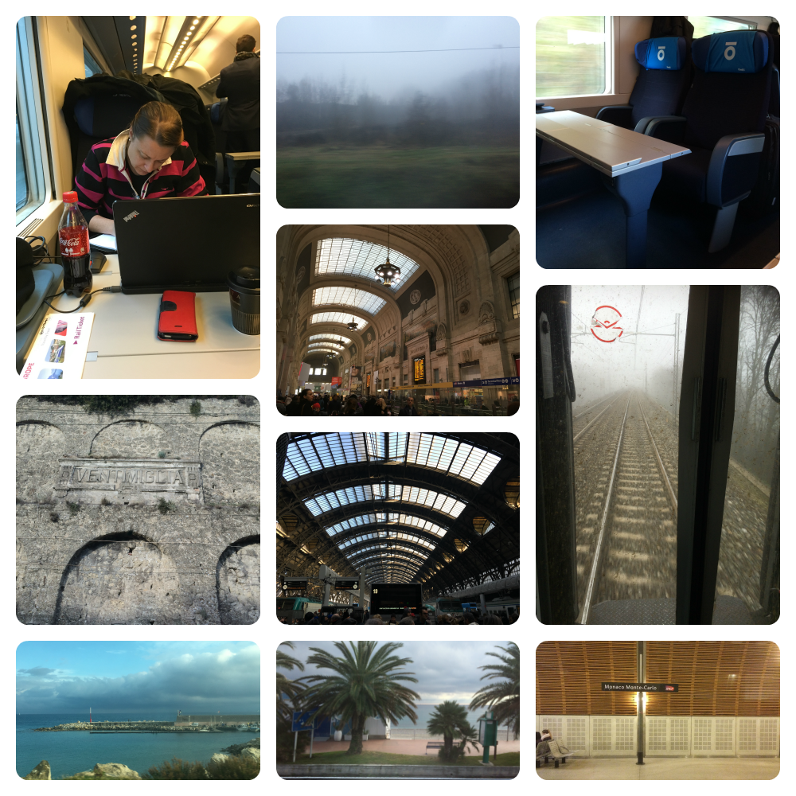
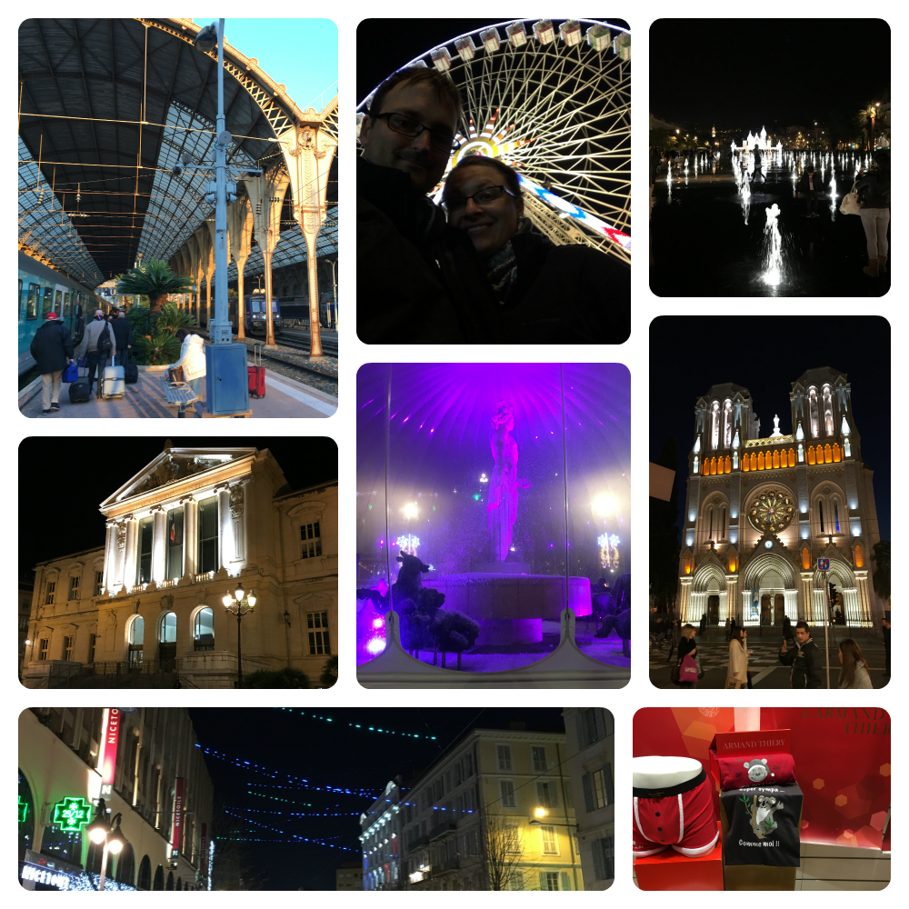
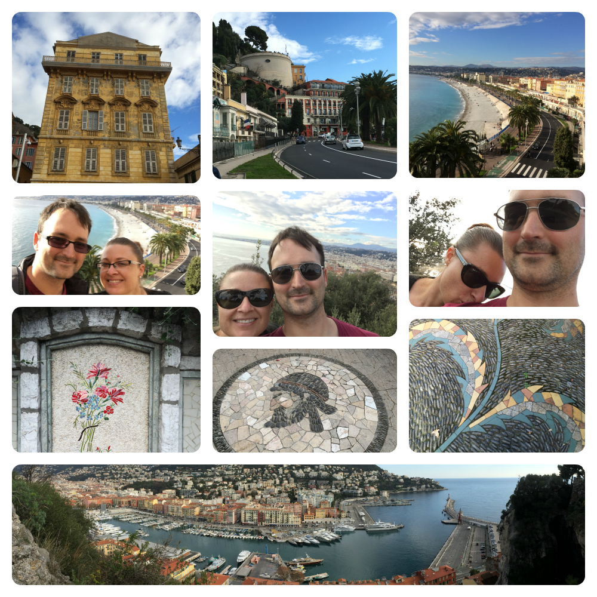
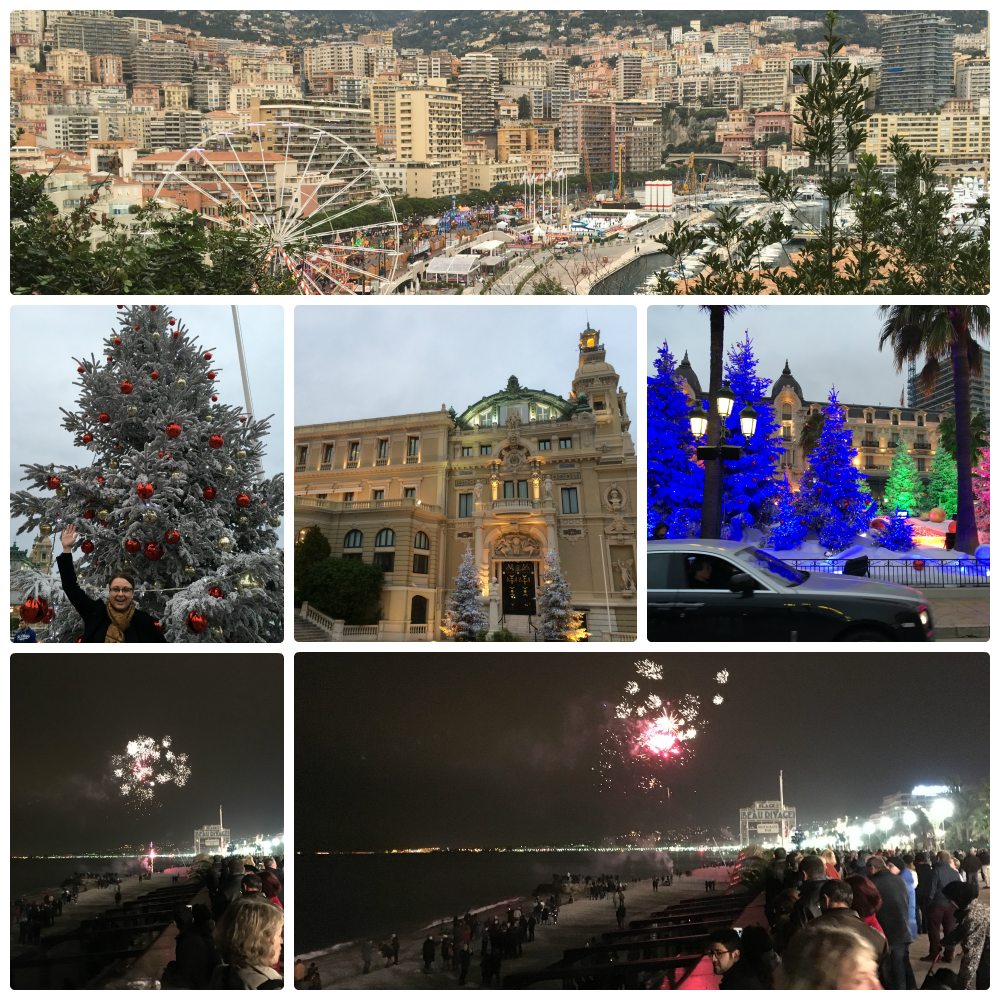

Day 22
Tuesday - 29 Dec 2015
We arrive in the French Riviera 15 minutes behind schedule not that we are interested in the time at that point. We are too busy taking photos of the beautiful country side, enormous villas and luxurious boats moored in man made harbours.
Monaco bursts out of the mountainous region. We are transfixed until 1610 when we arrive at the Nice train station. We're checked in by 1630 and are quickly back out exploring and looking for dinner options.
After a long day we flop into the warmth of bed at 2100.
 ***First class all the way***
Day 23
Wednesday - 30 Dec 2015
My head cold is starting to leave me thanks in part to a long sleep the night before. We dash down just in time for breakfast but to my disappointment there is no bacon *sad face*
We walk along the esplanade and explore the markets before continuing to the old castle ruins and look out. The bright and warm morning is the first opportunity of the trip to use our sunglasses. For about 2 hours anyway. *sigh*
Down the hill and onto the port area. This keeps us occupied until a late lunch in a cafe. We decide to purchase some bread, chorizo and cheese to go with the pate I had bought at the markets and have a cruisy night in. We also pick up some beer and gin to go with dinner.
We spend the evening eating too much, trawling through the channels desperately looking for something in English and working on the computers.

***There is no substitute for bacon***
Day 24
Thursday - 31 Dec 2015
Early morning start and down to breakfast. Still no bacon. WTF! This is not a good start to the day. Fine! Fruit and yogurt it is. You don't make friends with yogurt just sayin.
Onwards to the train station. Today we go to Monaco. We have a giggle at the request to be on the platform at least 2 minutes before the departure time. Cruisy compared to flying.
About 20 min later we step onto the platform at Monaco. After a set of escalators a lift and another very large set of escalators we arrive at the exit. The views are quite spectacular. Luck is on our side as the morning has stayed relatively clear though it's not like I'm digging for my sunnies or anything.
After a bit of aimless wandering there is a sign "Le Jardin Exotic". My 3 years working in a French restaurant come in handy here so I quickly translate the sign in my head "The Exotic Garden". Sweet! I like gardens! Thank gawd for my awesome ability with the French language. *sarcasm font*
We unquestioningly follow the signs up several very large sets of stairs ... very ... large ... sets of stairs. This place had better be amazing.
As it turns out this place is pretty neat. The garden is basically situated on the side of a cliff. The views are obscured and end up being worth the 40 million stairs we walked up.
Different varieties of cactus are supreme although there are also alcoves of caves with waterfalls and even a carp pond.


Next we pop into a famous Italian artist's exhibition. We thought we were going into the Monaco National Museum. Opps.
Onward to explore Monaco Ville. It is a long walk down the mountain and then up the outcropping. Within the city is The Oceanographic Museum of Monaco. YUSSS!! Onward!

We kill a couple of hours in the Oceanographic Museum and Aquarium and head to do the obligatory casino walk by. Again great views ... Again with the stairs but oh ... my ... the cars. All the very very pretty cars! *swoon*
By this time it is about 1700 and time to head back towards the hotel to get ready for NYE.
We have a leisurely couple of hours eating snacks and having a few drinks in the hotel room while we get ready. 2200 has us walking down towards Central to check out a place to hang out. Most places are full, snobby or dodgy. Then we find Ma Nolan's Irish Pub. WINNING.
A couple of laps and a drink later we find a table have a nibble on some chicken type products a few more drinks and a bit of a boogy jig before 2345 hit and we wander out towards the esplanade hoping for fireworks.
There are thousands of people strewn along the beach and esplanade. A few have fireworks which keeps us amused until the sound of midnight.
Nothing. Well ... if you count the small and distant display down towards Antibes ... but no you would't. *sad face* Have to make do with the local "talent".
The crowd quickly disperses and we follow obediently. It is after midnight after all!
***There is still no substitute for bacon or fireworks***
Day 25
Friday - 1 Jan 2016
After the late night we are super slack at getting out of bed. As the end of the breakfast serve comes near we hurriedly pull on pants and make our way down. Still no bacon. Not happy Jan.
Back to the hotel room for some reading and a nap. Hunger finally forces us to leave the comfort of the hotel room. We take the computers down to the esplanade and find a cafe. Hot chocolate and blog work keep us entertained until about 1500. By this time my conscience moves us to easy afternoon exploring until it starts to get dark when we return to the hotel.
A few hours warming up and we head out again. It is time for something with vegetables or salad. We end up having a red Thai curry that is lovely. Some exploration on the other side of the railway tracks though with all the shops closed it becomes creepy super fast. The consensus is made to use the complimentary drink the hotel gave us for NYE and work on the computers in the comfort of the hotel bar. Done!
***THERE IS NO SUBSTITUTE FOR BACON***
Day 26
Saturday - 2 Jan 2016
The 0830 alarm wakes us to a miserable day. It is wet. Really quite wet and miserable. Lucky for us it is a travel day. Perfect timing really.
There is enough time to head down and play Bacon Roulette before we check out and head to the train station. The walk through the drizzle is only about 10 minutes. Hoods up and he head out.
It is a 6.5 hour ... ish train trip to Toulouse. The God of Tricks is having a laugh at us today. Not only do we get to walk in the rain we also get to enjoy the nearly 7 hours in a cabin where we are 2 of 4 passengers in the cabin over the age of 14. Fantastic. *facepalm*
JT here we come.
***I would sell someone's kid for some bacon right now***